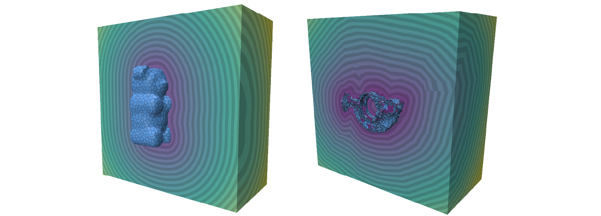

Solvers
There are two solvers: SignedHeatTetSolver solves for SDFs on a tetrahedralized domain, and SignedHeatGridSolver solves for SDFs on gridded domain. Both solvers assume the domain is rectangular, though future releases may consider arbitrary domains.
SignedHeatTetSolver()
Construct an SDF solver that acts on a tet-meshed domain.
- The solver has a member variable called
VERBOSE, that iftrue, prints status updates during solves.
SignedHeatGridSolver()
Construct an SDF solver that acts on a gridded domain.
- The solver has a member variable called
VERBOSE, that iftrue, prints status updates during solves.
To improve performance, operators and spatial discretizations are only built as necessary, and re-used in future computations if the underlying discretization hasn’t changed. This means future computations can be significantly faster than the initial solve (which includes, for example, tet mesh construction and matrix factorization.)
Signed distance to triangle and polygon meshes

Example:
The library uses geometry-central to manage mesh and point cloud structures.
#include "signedheat3d/signed_heat_grid_solver.h"
#include "signedheat3d/signed_heat_tet_solver.h"
#include "geometrycentral/surface/vertex_position_geometry.h"
using namespace geometrycentral;
using namespace geometrycentral::surface;
// Assume we have some input geometry -- these are geometry-central objects.
SurfaceMesh mesh;
VertexPositionGeometry geometry;
// Initalize tet mesh solver
SignedHeatTetSolver tetSolver = SignedHeatTetSolver();
// Configure some options
SignedHeat3DOptions solveOptions; // all the default options should be pretty good
// Solve!
Vector<double> sdf = tetSolver.computeDistance(geometry, solveOptions); // get distance to the mesh!
// Solve on a grid instead.
SignedHeatGridSolver gridSolver = SignedHeatGridSolver();
solveOptions.resolution = {64, 64, 64}; // change the resolution of the grid
Vector<double> sdf = gridSolver.computeDistance(geometry, solveOptions); // get distance to the mesh!
Vector<double> SignedHeatTetSolver::computeDistance(VertexPositionGeometry& geometry, const SignedHeat3DOptions& options = SignedHeat3DOptions())
Solve for an SDF on a tet mesh, to the mesh represented by geometry. Returns a Vector<double> object, which is a geometry-central object typedef’ed to Eigen’s vector type Eigen::Matrix<double, Eigen::Dynamic, 1>.
geometryis a geometry-central VertexPositionGeometry, which represents the geometry of a given mesh.optionsis a struct containing solve options (see below).
Vector<double> SignedHeatGridSolver::computeDistance(VertexPositionGeometry& geometry, const SignedHeat3DOptions& options = SignedHeat3DOptions())
Solve for an SDF on a grid, to the mesh represented by geometry. Returns a Vector<double> object, which is a geometry-central object typedef’ed to Eigen’s vector type Eigen::Matrix<double, Eigen::Dynamic, 1>.
geometryis a geometry-central VertexPositionGeometry, which represents the geometry of a given mesh.optionsis a struct containing solve options (see below).
Signed distance to point clouds
Example:
#include "signedheat3d/signed_heat_grid_solver.h"
#include "signedheat3d/signed_heat_tet_solver.h"
#include "geometrycentral/pointcloud/point_position_normal_geometry.h"
using namespace geometrycentral::pointcloud;
// Assume we have some input geometry -- these are geometry-central objects.
PointPositionNormalGeometry pointGeom;
// Initalize tet mesh solver
SignedHeatTetSolver tetSolver = SignedHeatTetSolver();
// Configure some options
SignedHeat3DOptions solveOptions; // all the default options should be pretty good
// Solve!
Vector<double> sdf = tetSolver.computeDistance(pointGeom, solveOptions); // get distance to the point cloud!
// Solve on a grid instead.
SignedHeatGridSolver gridSolver = SignedHeatGridSolver();
solveOptions.resolution = {64, 64, 64}; // change the resolution of the grid
Vector<double> sdf = gridSolver.computeDistance(pointGeom, solveOptions); // get distance to the point cloud!
Vector<double> SignedHeatTetSolver::computeDistance(PointPositionNormalGeometry& pointGeom, const SignedHeat3DOptions& options = SignedHeat3DOptions())
Solve for an SDF on a tet mesh, to the given point cloud with normals. Returns a Vector<double> object, which is a geometry-central object typedef’ed to Eigen’s vector type Eigen::Matrix<double, Eigen::Dynamic, 1>.
pointGeomis a geometry-central PointPositionNormalGeometry, which represents a point cloud with normals.optionsis a struct containing solve options (see below).
Vector<double> SignedHeatGridSolver::computeDistance(PointPositionNormalGeometry& pointGeom, const SignedHeat3DOptions& options = SignedHeat3DOptions())
Solve for an SDF on a grid, to the given point cloud with normals. Returns a Vector<double> object, which is a geometry-central object typedef’ed to Eigen’s vector type Eigen::Matrix<double, Eigen::Dynamic, 1>.
pointGeomis a geometry-central PointPositionNormalGeometry, which represents a point cloud with normals.optionsis a struct containing solve options (see below).
Solve options
All computeDistance() functions take an optional argument called options, which is a struct with the following variables:
| Field | Default value | Meaning |
|---|---|---|
levelSetConstraint |
LevelSetConstraint::ZeroSet |
Whether to apply level set constraints, with options LevelSetConstraint::ZeroSet, LevelSetConstraint::None, LevelSetConstraint::Multiple, corresponding to preservation of the input surface as the zero set, as multiple level sets (one for each surface component), or no constraints, respectively. |
tCoef |
1 |
Sets the time used for short-time heat flow. Generally you don’t have to change this. |
bboxMin |
The 3D position of the minimum corner of the computational domain, which is assumed to be an axis-aligned rectangular prism. If not specified, the size of the domain will be automatically computed so as to encompass the input source geometry. | |
bboxMax |
The 3D position of the maximum corner of the computational domain. | |
resolution |
np.array([2**5, 2**5, 2**5]) |
3D vector specifying the tet or grid spacing, with larger values indicating more refinement. If solving on a grid, this corresponds to the number of nodes along each dimension. Default values are 2^{5}. |
rebuild |
True |
If True, force (re)build the underlying tet mesh or grid domain. This will induce the solver to re-factorize the matrices involved in the solve. |
Helper functions
Tet mesh solver
Eigen::MatrixXd SignedHeatTetSolver::getVertices() const
Returns a dense n_vertices x 3 matrix representing the vertex locations of the underlying tet mesh domain.
SignedHeatTetSolver::getTets() const
Returns a dense integer-valued n_tets x 4 matrix representing the tetrahedra of the underlying tet mesh domain, where each tetrahedra is given by four vertex indices (0-indexed).
void SignedHeatTetSolver::isosurface(std::unique_ptr<SurfaceMesh>& isoMesh, std::unique_ptr<VertexPositionGeometry>& isoGeom, const Vector<double>& phi, double isoval = 0.) const
Contours a scalar function defined on the tet mesh, given by the input vector phi, according to the isovalue isoval. Returns pointers to the mesh and geometry objects defining the polygon mesh of the resulting isosurface.
Grid solver
std::array<size_t, 3> SignedHeatGridSolver::getGridResolution() const
Returns a length-3 array giving the number of cells of the background grid along the x-, y-, and z-axes, respectively.
std::tuple<Eigen::Vector3d, Eigen::Vector3d> SignedHeatGridSolver::getBBox() const
Returns the tuple {bboxMin, bboxMin}, where bboxMin and bboxMin are the 3D positions of the minimal and maximal node corners of the grid, respectively.
These two functions expose the order in which scalar data defined at grid nodes is flattened into a single 1D vector.
size_t SignedHeatGridSolver::indicesToNodeIndex(const size_t& i, const size_t& j, const size_t& k) const
Converts a triple of indices indicating a node’s position along the x-, y-, and z- axes, to a single index representing the corresponding global index of the node.
Vector3 SignedHeatGridSolver::indicesToNodePosition(const size_t& i, const size_t& j, const size_t& k) const
Returns the global 3D position of a node given a triple of indices indicating the node’s position along the x-, y-, and z- axes.